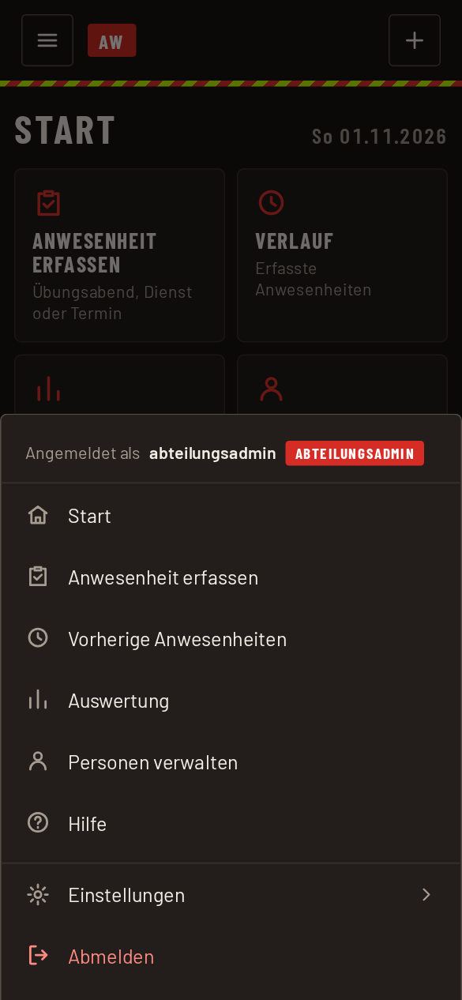

App installieren und anmelden
Die App läuft im Browser. Auf dem Startbildschirm verhält sie sich wie eine normale App: eigenes Symbol, Vollbild, schneller Start.
Anwesenheit und Einsatzprotokoll haben dieselbe Adresse und dieselbe Anmeldung. Das Einsatzprotokoll liegt unter /einsatzprotokoll/. Wollt ihr beide am Startbildschirm, fügt ihr sie getrennt hinzu: die Anwesenheit von der Hauptadresse, das Einsatzprotokoll von der Adresse mit /einsatzprotokoll/.
Zum Startbildschirm hinzufügen
iPhone und iPad (Safari)
- Die Adresse der App in Safari öffnen.
- Auf das Teilen-Symbol tippen (Quadrat mit Pfeil nach oben).
- „Zum Home-Bildschirm“ wählen und mit „Hinzufügen“ bestätigen.
Android (Chrome)
- Die Adresse der App in Chrome öffnen.
- Oben rechts auf die drei Punkte tippen.
- „App installieren“ oder „Zum Startbildschirm hinzufügen“ wählen.
Hinweis Android: Zeigt das Handy beim Hinzufügen die Meldung „Unsichere App blockiert“ von Play Protect, kommt sie meist von Samsung Internet. Die App dann über Chrome hinzufügen.
Anmelden
- App vom Startbildschirm öffnen.
- Benutzernamen und Passwort eingeben und auf „Anmelden“ tippen.
- Das Passwort lässt sich im Menü unter „Passwort ändern“ ersetzen.
Auf einem Fahrzeug-Tablet meldet sich das Gerät selbst an. Dort ist keine Eingabe nötig.
Das Menü
Alles Weitere erreicht ihr über das Menü oben links. Welche Punkte dort stehen, hängt von eurer Rolle ab. Reine Erfasser landen direkt in der Erfassung. Abteilungsadmins und Admins starten auf der Startseite mit Kacheln für ihre Bereiche.

Darstellung wählen
Im Menü unter „Einstellungen“ lässt sich zwischen Automatisch, Dunkel und Hell wählen. „Automatisch“ folgt dem Gerät. Die Wahl gilt nur für dieses Gerät.
Drucken und PDF in der Startbildschirm-App
In der Startbildschirm-App öffnet sich kein Druckdialog. Die App erzeugt stattdessen ein PDF und öffnet das Teilen-Menü. Dort lässt es sich ausdrucken, speichern oder weiterleiten.